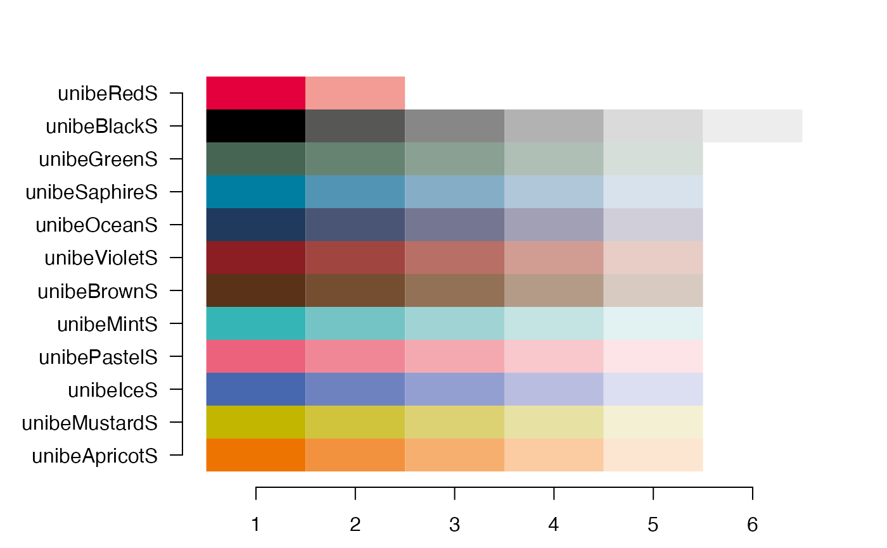

unibecols.RdUniversity of Bern corporate design colours Colours taken from pages 18 to 20 of https://intern.unibe.ch/unibe/uniintern/content/e1883/e683686/e695596/e1075264/e1075265/03_UniBE_ManualGestaltungselemente_202112_ger.pdf
50% UnibeRed
UnibeRed colour scale (2 colours)
Black
Scale from black to grey (6 colours)
UNIBE grey
UNIBE green
UNIBE green scale (5 colours)
UNIBE saphire (similar-ish to sky blue)
UNIBE saphire scale (5 colours)
UNIBE ocean (dark blue)
UNIBE ocean scale (5 colours)
UNIBE violet (a sort of burgundy colour)
UNIBE violet scale (5 colours)
UNIBE brown
UNIBE brown scale (5 colours)
UNIBE mint (cyan-ish)
UNIBE mint scale (5 colours)
UNIBE paster (pink)
UNIBE paster scale (5 colours)
UNIBE ice (purplish blue)
UNIBE ice scale (5 colours)
UNIBE mustard
UNIBE mustard scale (5 colours)
UNIBE apricot
UNIBE apricot scale (5 colours)
all UNIBE scales
list of all UNIBE scales
unibeRed()
unibeRed50()
unibeRedS()
unibeBlack()
unibeBlackS()
unibeGrey()
unibeGreen()
unibeGreenS()
unibeSaphire()
unibeSaphireS()
unibeOcean()
unibeOceanS()
unibeViolet()
unibeVioletS()
unibeBrown()
unibeBrownS()
unibeMint()
unibeMintS()
unibePastel()
unibePastelS()
unibeIce()
unibeIceS()
unibeMustard()
unibeMustardS()
unibeApricot()
unibeApricotS()
unibePalettes(plot = TRUE)
unibeScales()plot the colours. if FALSE, returns a dataframe of the colours
unibeRed()
#> [1] "#e4003c"
unibeRedS()
#> [1] "#e4003c" "#f39b95"
unibeGreenS()
#> [1] "#466553" "#668271" "#8aa092" "#afbfb5" "#d6ded9"
unibePalettes()
